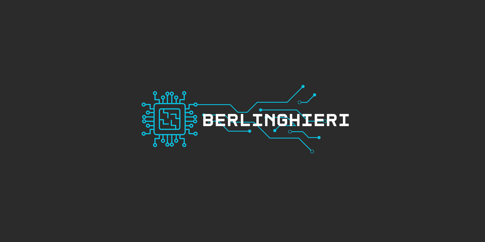

I build and study software systems.
I'm a Data Engineer interested in distributed systems, data infrastructure, and the architecture behind them.
My work revolves around designing data pipelines and systems that are reliable, maintainable, and capable of
growing with the problems they are meant to solve.
I'm particularly interested in understanding what happens underneath the abstractions we work with every day:
how systems behave at scale, how data moves through them, and how architectural decisions shape the software
we build.
Outside of work, I like building things of my own, exploring Linux, reading, listening to music,
and learning about subjects that catch my curiosity. Some become projects. Others become something else.
Get in touch!